Rhythms are a way of structure, to help the notes flow in a piece in an organised way with counting.
A time signature is a written symbol at the beginning of a musical piece that tells musicians how the rhythm and beats are organized. It looks like a fraction stacked on top of each other, though it is not a math fraction!
The Numerator-ish number, or simply the topmost number represents how many beats there are in a bar or measure. A beat is a sense of something, it is the steady, repeating, and unchanging pulse that you naturally tap your foot or nod your head to, much like a heartbeat or a ticking clock. A beat is different from a rhythm where a beat doesn't change in a section unless told to in the music, while a rhythm is the actual pattern of long sounds, short sounds, and rests that all fall around the steady beat.
The denominator-ish number, or the bottom number represents how you are going to use that beat in each measure. For example, 2/4, means that there are 2 beats of quarter notes in each bar. Don't worry if you don't konw what a quarter note is right now! All the note values are going to be covered later.
In other words, the top number is how many beats there are in a bar and the bottom number is what type of beats there are
There are some very common time signatures such as, 2/4, 3/4, 4/4, 3/8, 6/8, 9/8, and 12/8
Here is an example of the 3/4 time signature:
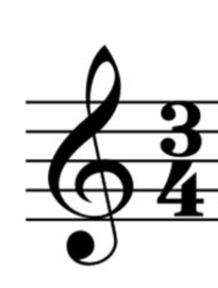
The top number represents that there are 3 beats in one bar
The bottom number represents that each beat is one quarter note
Each note has a value, which has some mathematical sense to it. They indicate the relative duration of a sound in music notation, or in other words how long or short you should play a note for!
| US English | UK English | Visual Appearance | Image |
|---|---|---|---|
| Whole Note | Semi-breve | open circle | 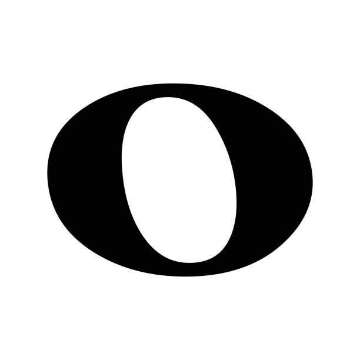 |
| Half Note | Minium | open circle with stem sticking up or down | 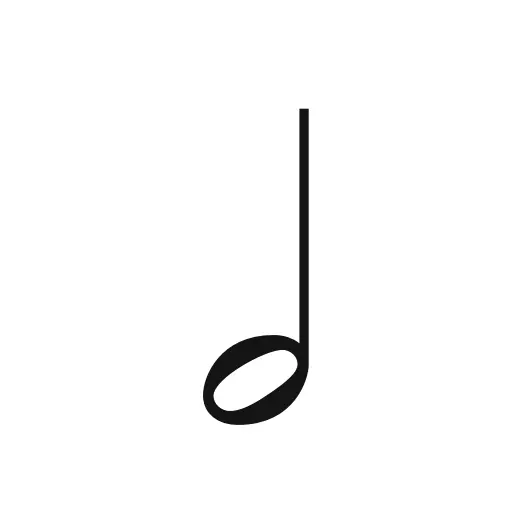 |
| Quarter Note | Crochet | closed circle with stem sticking up or down | 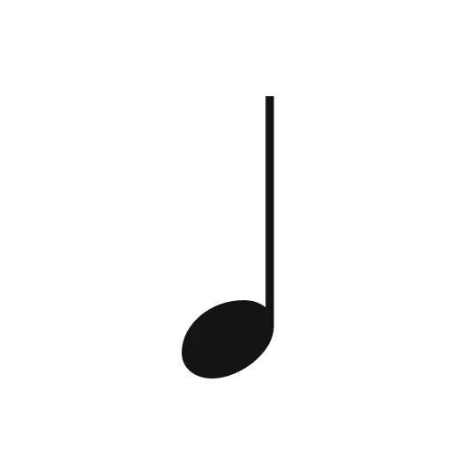 |
| Eigth Note | quavers | closed circle with stem sticking up or down with one beam | 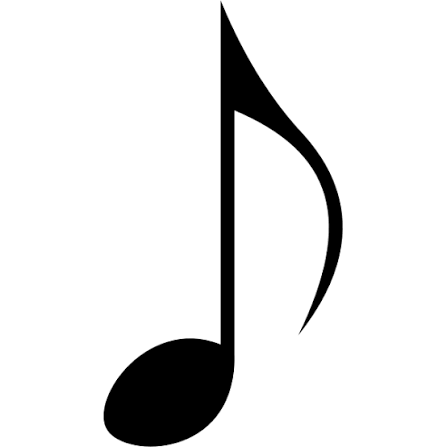 |
| Sixteenth Note | semi-quavers | closed cirlce with stem sticking up or down with two beams |
Compounded rhythms are a mixture of many different normal rhythms smushed together. Do you know why these were created....
To bring joy *cough* suffering *cough*. Yup. Welcome to the music world.
Compounded rhythms are very difficult to remember, if you don't master this trick. The trick is, words.
Many musicians have come up with phrases to help with playing the right rhythm. For example, strawberry represents this pattern:
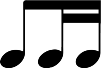
| Image | Word Sound | Audio |
|---|---|---|
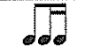 |
straw-be-ry | audio |
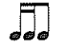 |
le-mon-ade | audio |
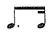 |
cof-fe | audio |
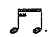 |
cup-caaaaake | audio |
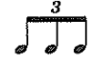 |
tri-o-la | audio |
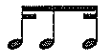 |
ba-naaaaaaa-na | audio |